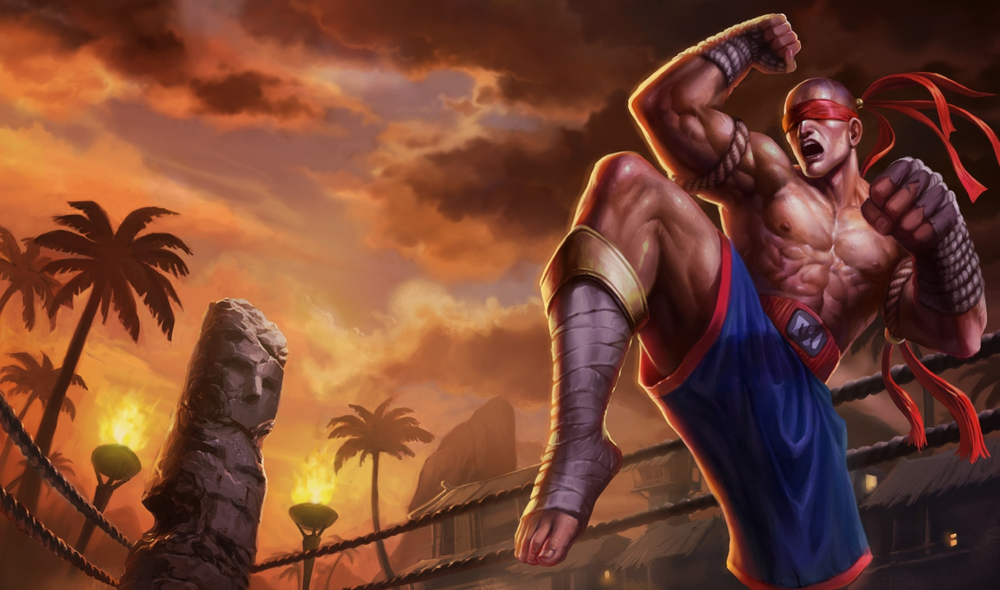
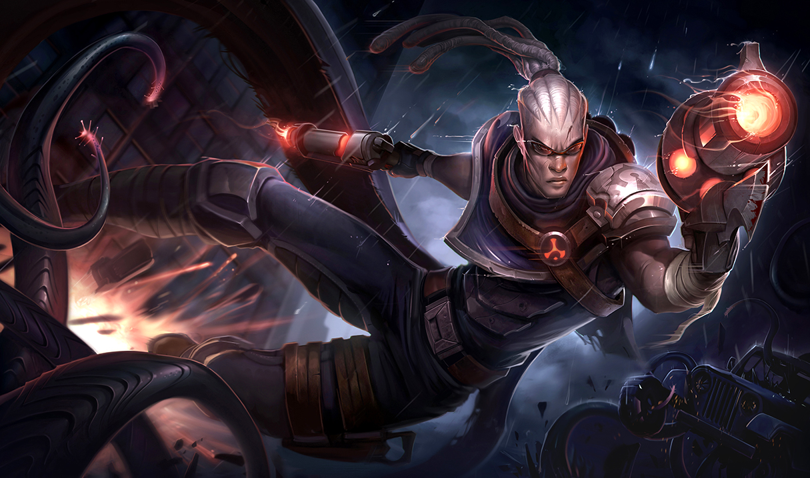

BootyEatOut
I made this account to help my cousin get out of Bronze I. I played too many solo games and now I'm Gold III from jumping past Gold V. I really use this account whenever I play normals/ranked with my friends and they are getting booty blasted. Hence the name.

Lee Sin is a fun pick because of his diversity. Unlike other champions, Lee has the ability to start fights that may not be favorable for other champions. His kit consists of moves that allow him to move around quickly while being able to slow others and kick them away. One famous Chinese player 'Insec' coined the move of using Q + placing ward + W + R all in one swift motion that really sets the good Lee Sins from the bad.

Lucian is fun to play because of how fast he can combo. His combo is what seperates the good players from the mediocre ones. They need to be able to auto attck animation cancel with his abilities to completely delete someone before they can react. Due to buffs in specific items he is beginning to shine bright in the group of meta chamipions due to his high damage, health, and maneuverability. Using his combo correctly leads to having his dash up almost infinitely. If chasing, the combo is E + auto + W + auto + R + auto/Q or if going for poke in lane, it usually is E + auto + Q + auto.